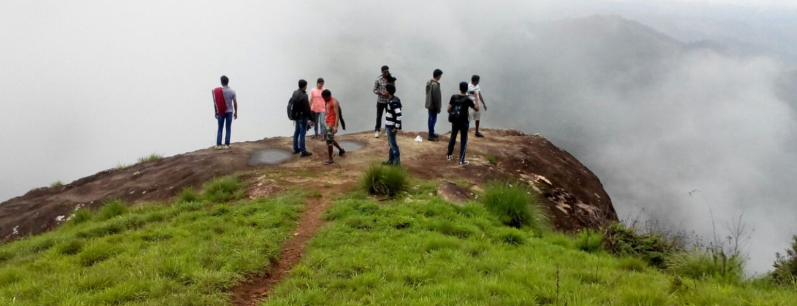
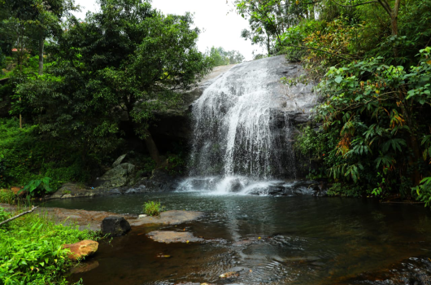

Trekking Trails in Tamil Nadu – Authorized by Trek Tamil Nadu (TNWEC)
Explore a wide range of trekking trails across Tamil Nadu, officially authorized by Trek Tamil Nadu (Tamil Nadu Wilderness Experiences Corporation - TNWEC). These trails take you through breathtaking landscapes including dense forests, waterfalls, shola ecosystems, and scenic mountain ranges. Each trek is carefully designed to offer a perfect blend of adventure, nature exploration, and environmental awareness while ensuring safety and sustainability.
{kind=link}
These trekking routes are approved and maintained by the Tamil Nadu Forest Department, ensuring a safe and regulated trekking experience. Trekkers will get an opportunity to explore rich biodiversity, unique terrains, and pristine natural environments, giving the Trekkers a " Life-time " experience in the Wilderness , these treks provide an ample learning experience for the trekkers about the rich Biodiversity and the importance of conserving the " Flora and Fauna " . The trekking group will be accompanied by trained guides of the Forest department and they not only provide the logistic support but also explain in detail about the forest terrain / region , the trekking route , dos and don't, about the water bodies , the flora and fauna. Gaining knowledge and conserving these pristine locations is of utmost importance for the " Survival of Mankind" . Every Trekker is covered under a mandatory" trek insurance" , which is offered by Tamilnadu Wilderness Experiences Corporation. The trekkers are required to fill-up the declaration form and sign the same , parent / guardian have to fill-up the declaration form and sign the same , for minors . Every trekker is expected to abide by the rules and regulations, as laid down by the Forest department of Tamilnadu. The timing for trekking ( as per the designated trekking slot ) will have to be adhered too. The trekkers are required to carry their own reusable water bottles ( avoid plastic pet bottles ) , snacks , small back bag, rain-coat ( if needed ) . A strict " Leave No Trace " policy has to be followed and no littering of waste is allowed inside the forest areas. The trekkers , should be physically fit and maintain good health , as the treks are classified as " easy , moderate and tough treks ". Trekkers are always instructed to stay with the group and never deviate from the designated trekking route, as mobile phone signals are very limited in the forest areas. There is a "maximum participants" limit for every Trekking slot and the same has to be followed , as over-crowding is not permitted and trekking activity is done in accordance with Sustainable / Responsible " Eco-tourism " practice. All necessary trekking fees have to be paid well in advance, before commencement of each trek. Every trekker would be provide with a brochure with specifics about the bird species in the region. The trekkers would also be provided with a " Trek Tamilnadu" cap, to wear during the trek. After completion of the trek, " Trek completion " digital certificate would be issued for each Trekker from the Tamilnadu Forest department ( Tamilnadu Wilderness Experiences Corporation).
All treks are conducted under the supervision of trained forest guides. Participants will gain valuable insights into flora, fauna, conservation practices, and the ecological significance of these regions. These experiences are not just treks but journeys into the heart of nature.
Designated Trekking Routes - Authorised by the Forest Department of Tamilnadu
- Chinnar Kottar
- Guidyam Caves Heritage Trail
- Gene Pool
- Senbakam
- Yercaud - Gundur Lime Stone Cave
- Shenbagathoppu Trail
- Kutladampatti Falls - Thadagai Trail
- Kodaikanal Observatory - Gundar Zero Point
- Aliyar (Canal Bank)
- Nagalur - Sanniyasimalai Peak
- Yelagiri - Swamimalai
- Kurangani - Sambalaru
- Courtallam - Shenbagha Devi Falls
- Karaiyar - Moolakasam
- Longwood Shola
- Theerthaparai
- Kodaikanal - Vellagavi (Camp Stay)
- Manambolly
- Mamarathu Solai
- Topslip - Pandaravarai
- Avalanche (Cauliflower Shola) - Kolaribetta
- Karikaiyur to Rangasamy Peak
- Kalikesam - Balamore
- Biligundulu - Rasimanal
- Sembukarai - Perumalmudi
- Jalagamparai
- Kullar Caves (Tiruvannamalai)
- Injikadavu
- Kalikesam - Maramalai
- Karikaiyur to Porivarai Rock Painting
- Kumbakarai - Vellagavi - Kodaikanal (Camp Stay)
- Kodaikanal - Vellagavi - Kumbakarai (Camp Stay)
- Guthirayan Peak
- Avalanche (Cauliflower Shola) - Devarbetta
- Parsons Valley Trekking Shed to Mukurthi Hut

We strictly follow sustainable eco-tourism practices with a "Leave No Trace" policy. These trekking programs support local communities and promote conservation awareness. Join us to explore Tamil Nadu’s hidden natural gems responsibly and create unforgettable trekking experiences.